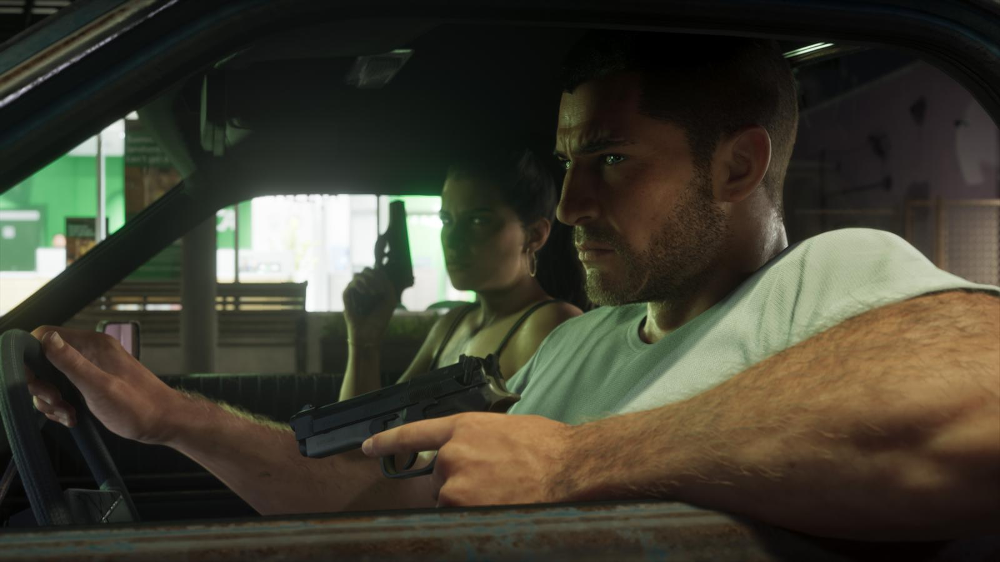

Угон и топливо в GTA 6
Обновлено: 24.09.2026

Коротко
- У машин разные уровни защиты — нужны разные инструменты.
- Водитель при угоне может сопротивляться.
- У машин и мотоциклов есть топливо, заправка — на АЗС.
Угон
- Припаркованные машины защищены по-разному — для взлома нужны разные инструменты.
- Угон с водителем — короткая сценка, в которой он может сопротивляться.
- Приложение в телефоне показывает характеристики машины.

Топливо
У машин и мотоциклов есть топливо: если бак опустеет, можно застрять посреди дороги. Заправиться можно на АЗС.
Источники: Rockstar Games — официальный сайт GTA VI (rockstargames.com/VI), Rockstar Newswire; превью журналистов и официальный геймплейный ролик Rockstar (по данным GTABase, VICE).